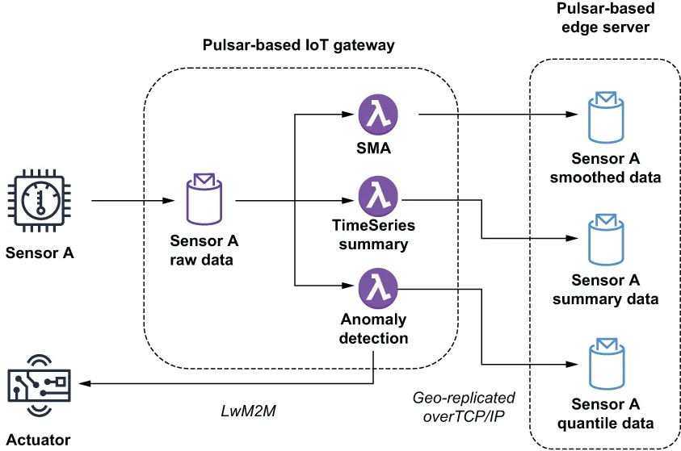

The endless streams of readings taken from the same sensor are the foundation of edge analytics. These univariate datasets represent the raw data used to perform the analysis of the IIoT data as a whole. Therefore, it is best to start by covering the type of analysis that can be performed on these univariate datasets. A summary of the various types of analytic processing commonly performed is depicted in figure 12.8.
从同一个传感器上取到的那些无穷无尽的读数流，是边缘分析的基础。这些单变量数据集代表了我们用来对 IIoT 数据做整体分析的原始数据。因此，最好先来讲讲可以对这些单变量数据集执行的分析类型。图 12.8 描绘了常被执行的各类分析处理的一个概览。

Figure 12.8 The sensor publishes its readings to the Sensor A Raw Data topic that is used as input to three Pulsar functions. Two of the functions, SMA and TimeSeriesSummary, use the values to compute statistical values from the raw data before publishing these statistics to local topics that are configured to be geo-replicated to the Pulsar cluster running on the edge server. The third function determines whether the sensor value is anomalous and should activate an actuator in response to any potentially catastrophic event it detects.
图 12.8 传感器把自己的读数发布到 Sensor A Raw Data 主题，该主题被用作三个 Pulsar 函数的输入。其中两个函数（SMA 和 TimeSeriesSummary）用这些值从原始数据中计算出各个统计值，然后把这些统计量发布到本地主题——这些本地主题被配置为会异地复制到运行在边缘服务器上的那个 Pulsar 集群。第三个函数则判定该传感器值是否异常，并应针对它探测到的任何潜在灾难性事件去激活一个执行器。
This processing is accomplished using Pulsar functions deployed on the IoT gateways closest to the source of the data. Therefore, it is important that these functions minimize the amount of memory and CPU required to perform their analysis.
这些处理是借助部署在离数据来源最近的那些 IoT 网关上的 Pulsar 函数来完成的。因此，重要的是这些函数要把执行自身分析所需的内存和 CPU 量降到最低。